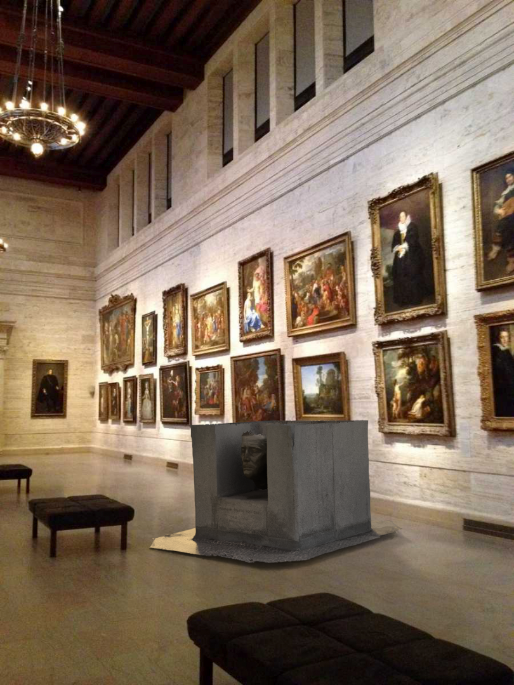
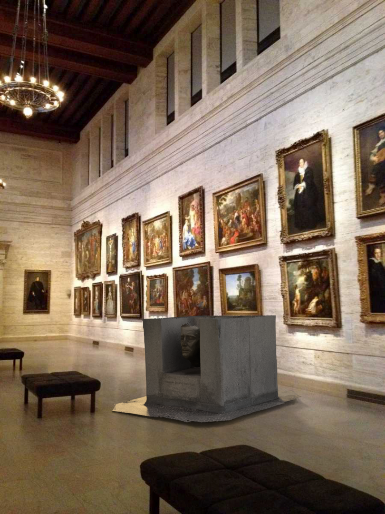

Welcome to our virtual museum showcasing the remarkable legacies of three influential American presidents. Through this interactive exhibition, explore the personal artifacts, historical documents, and compelling stories of Franklin Roosevelt, George Washington, and Abraham Lincoln. Each artifact tells a unique story of leadership, courage, and the pivotal moments that shaped our nation's history.
Franklin Roosevelt, the 32nd President of the United States, is remembered for leading the country through the Great Depression and World War II. His leadership and the New Deal reforms significantly reshaped American society.
During his presidency, Roosevelt implemented numerous groundbreaking programs including Social Security, the Works Progress Administration, and the Tennessee Valley Authority. His famous "fireside chats" helped restore public confidence during difficult times. Despite being paralyzed from polio, he served an unprecedented four terms as president, guiding America through some of its most challenging years. His leadership during World War II was crucial in forming the Allied Powers and ultimately achieving victory.
 

George Washington, the first President of the United States, is revered for his leadership during the American Revolution and his role in shaping the nation's early government. He is known as the "Father of the Nation."
As Commander of the Continental Army, Washington led American forces to victory in the Revolutionary War. He presided over the Constitutional Convention and established many of the customs and traditions that define the American presidency today. Washington set a precedent by stepping down after two terms, demonstrating his commitment to democratic principles. His farewell address warned against excessive political party spirit and entangling foreign alliances, advice that remains relevant today.

Abraham Lincoln, the 16th President of the United States, is best known for his leadership during the Civil War and his role in the abolition of slavery with the Emancipation Proclamation.
Lincoln's presidency was defined by his steadfast leadership during the American Civil War and his commitment to preserving the Union. His Gettysburg Address became one of the most famous speeches in American history, emphasizing democracy and equality. Beyond his role in abolishing slavery, Lincoln modernized the economy with a national banking system, protective tariffs, and railroad development. His assassination in 1865, just days after the Civil War's end, made him a martyr for the causes of national unity and racial justice.